Exercise 4. Queries
Objective
Count the number of buildings of various types in the ‘local areas’ of the Novosibirsk city
Key steps
- Create a new GeoPackage;
- Digitize local areas;
- Add custom spreadsheet to the project;
- Join polygon data with external table;
- Reproject data;
- Perform attribute query;
- Perform spatial query;
Screenshots and additional information
Add a spreadsheet to the QGIS project
Go to Data Source Manager – Delimited Text:
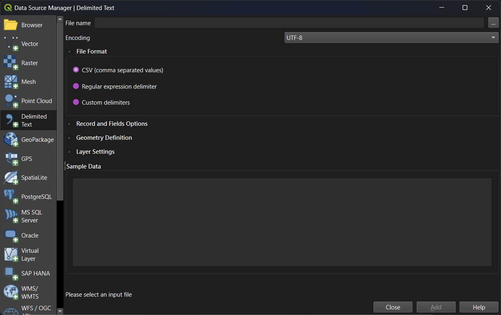
Browse for a file in the first row. Adjust settings, if necessary. Check if everything is good in the ‘Sample data’ form.
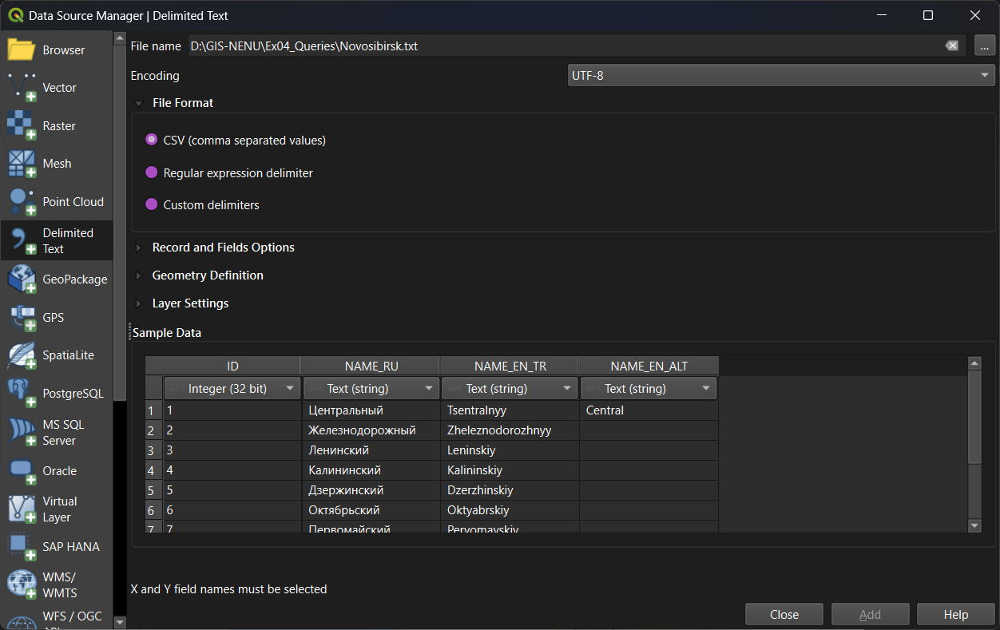
Press Add to add data to the project. The sheet will be added to the project.
Delimited Text interface allows for adding geometries described as point coordinates or WKT.
Join tables
To establish a temporary table join, do the following:
- check if there are key fields suitable for join in both tables (layers);
- open target layer properties;
- navigate to
Joinssection;
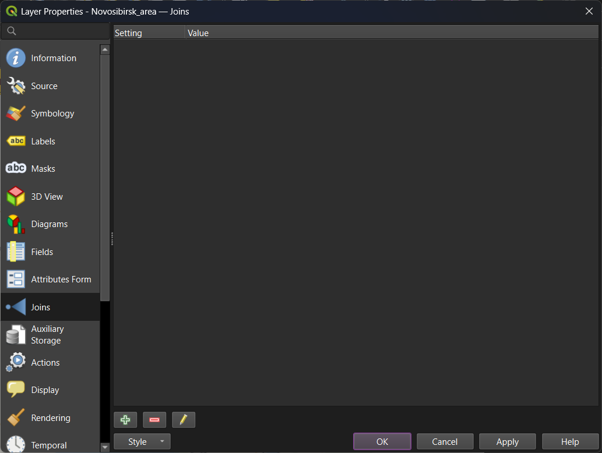
- press
Add New Joinbutton (green plus sign below) - in the new window, set join layer (table), join field (primary key of the join layer) and target field (external key for join).
- adjust additional settings if needed.
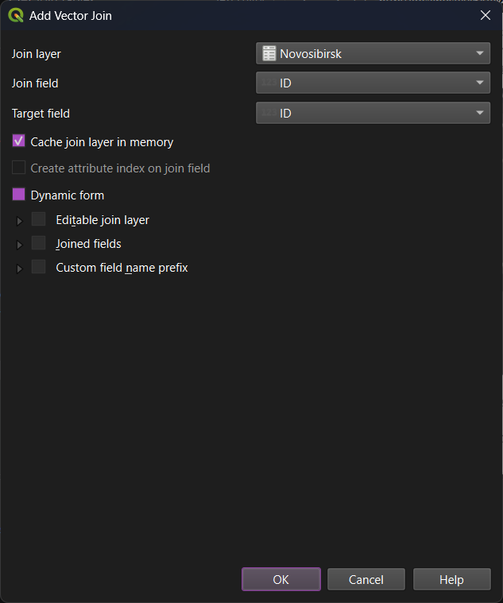
- press
OKto save join settings, thenApplyorOKin the layer properties window.
The join is created. You can see the result when opening the target layer attibute table:
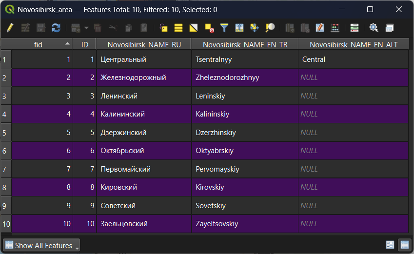
Reproject data
To reproject vector data, use Vector – Data Management Tools – Reproject Layer.
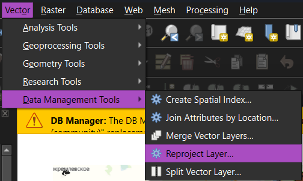
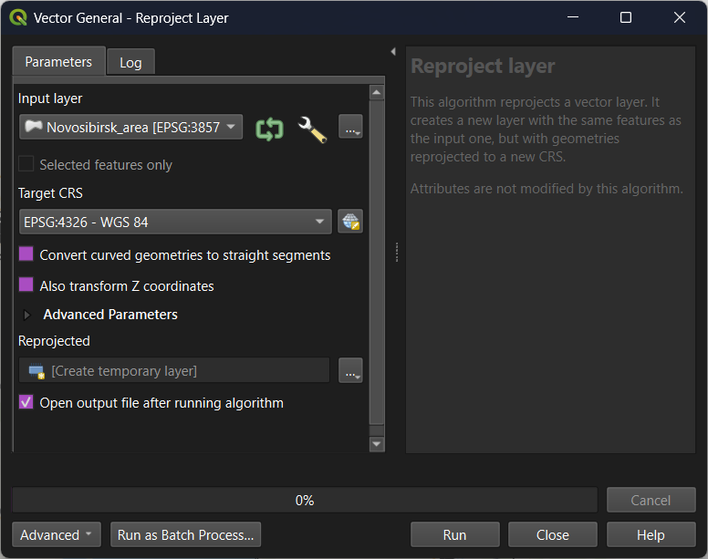
For this particular exercise, reprojection is not required: modern QGIS versions are able to perform spatial queries with different coordinate systems. Reprojection is needed in QGIS when you perform geometric operations between multiple raster or vector layers, or when it is necessary to make measurements and geometric operations in projected coordinate systems.
Attribute selection
Attribute selection can be performed from the Selection Toolbar. There are two common options: ‘Select Features by Value…’ and ‘Select Features by Expression…’.
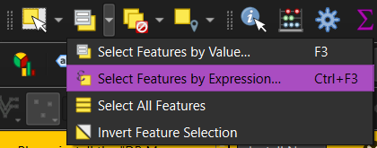
The second instrument (‘Select Features by Expression…’) offers a more flexible possibility, because it allows you to create and apply SQL-like query. The interface itself is equal to the Field Calculator window (in fact, they are the same in QGIS).
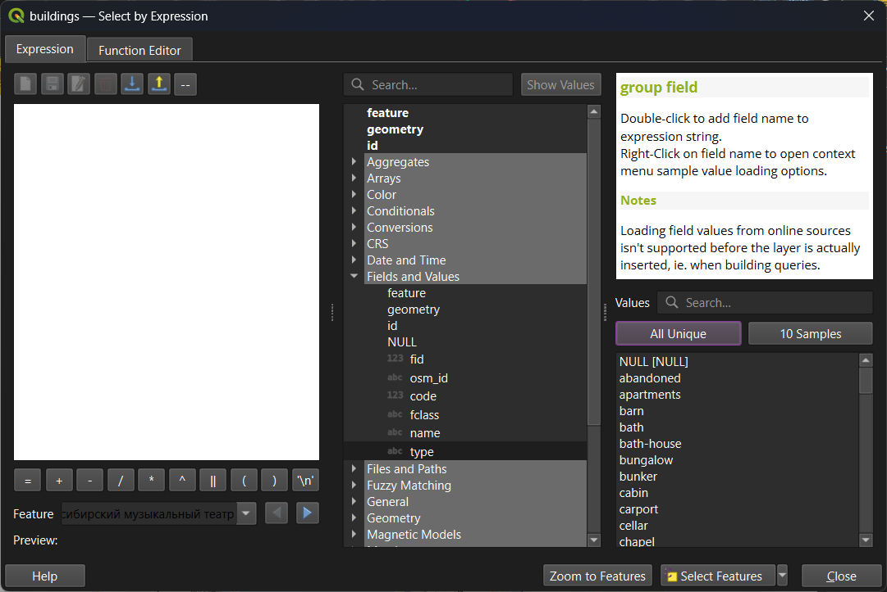
There are four possible options for selection result:
- Select Features;
- Add to Current Selection;
- Remove from Current Selection;
- Filter from Current Selection.
Choose correct option for your query.
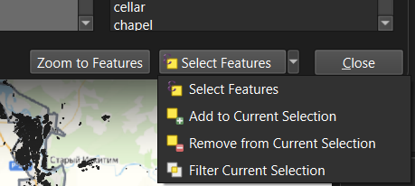
Spatial query
Spatial queries in QGIS are performed via Vector – Research tools – Select by Location....
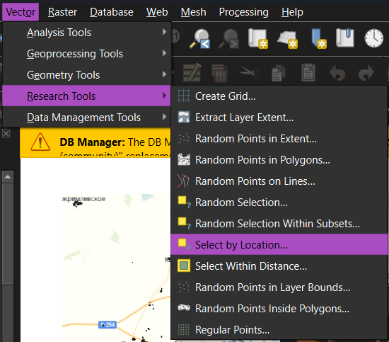
Eight possible overlay predicates are available:
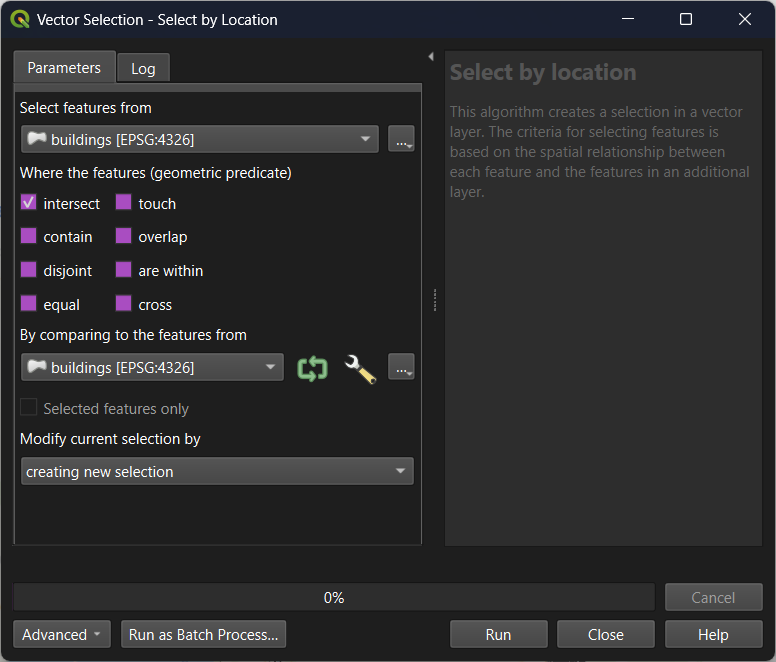
There are also four possible options for selection result, just like in attibute selection interface.